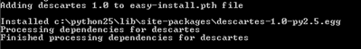

2010-05-24 17:10
admin
python, web development
cloudmade, descartes, geojson, mapplotlib
visualising-geojson-in-15-minutes
published
The objective of this post is to save a GeoJSON feature collected from the web to an image file, and was inspired by the Shapely manual. This will be done using Windows, Python 2.5 (although 2.6 should be almost exactly the same steps), and some additional Python packages. This example uses GeoJSON data from a CloudMade geocoding service.

The greatest difficulty when trying to do things in Python is getting the right packages to match your Python version, and making sure all the package dependencies are in place.
1. Download Numpy from http://sourceforge.net/projects/numpy/files/NumPy/. Numpy is “a package that defines a multi-dimensional array object and associated fast math functions that operate on it.”
Check that you download the version that matches your Python installation. In my case I needed numpy-1.4.1-win32-superpack-python2.5.exe.
2. Download MatPlotLib from http://sourceforge.net/projects/matplotlib/files/. I downloaded matplotlib-0.99.1.win32-py2.5.exe. Again there are many different versions that can be downloaded ?” expand the arrows to see the options.
There’s even a 64-bit version for Windows. However there doesn’t appear to be a 64 bit version of Numpy for Windows, and as Numpy is required by MapPlotLib to run I’m not sure how it could ever be of use. This is where the whole Python packages and 3rd party libraries gets exceedingly confusing..
3. Install the Python setuptools from http://pypi.python.org/pypi/setuptools. These tools include easy_install which “lets you automatically download, build, install, and manage Python packages.” Again get the relevant Python package in my case setuptools-0.6c11.win32-py2.5.exe.
If you have only installed Python during your log in session then reboot to refresh your environment variables. This should allow you to use the easy_install program directly from the Windows Command Prompt (by typing easy_install rather than the full path).
4. We can now install `descartes <http://pypi.python.org/pypi/descartes/1.0>`__ using the easy_install program. Descartes is uses “geometric objects as matplotlib paths and patches.” Type the command below (the full path may not be required) into a Windows Command Prompt:
C:\Python25\Scripts\easy_install.exe descartes
This command should return output similar to below:
If you already have IDLE (the Python editor open) then quit it and restart. If not you are likely to get “ImportError: No module named X” errors, even though the modules have been installed.
5. You should now be able to run the Python script below to generate a PNG image file of England.
‘%s/%s/geocoding/v2/find.geojs?query=%s&return_geometry=true’ \ | % (root,apikey,query)
zorder=2) | #plot it on the graph | myplot.add_patch(patch)
I now have a way of easily visualising GeoJSON I have a way of checking spatial operations on spatial data manipulated directly from the cloud. More to follow.
Comments🔗
1. Steve **
thanks … cant help but wonder why this capability (report dbase schema) isnt supported in even the most basic fashion
Cheers
S
ReplyAdd Comment